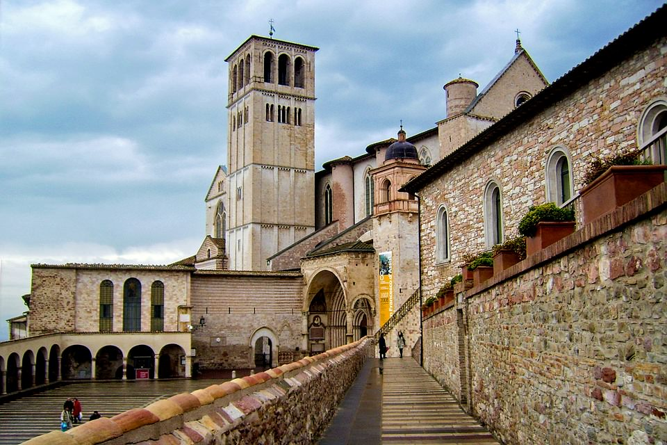

Романська архітектура.

Романський стиль в архітектурі нерозривно пов’язаний з тією історичною епохою, у якій він розвивався. У XI-XII століттях у Європі були непрості часи: існувала безліч невеликих феодальних держав, почалися набіги кочових племен, вирували феодальні війни. Все це вимагало масивних міцних будівель, які не так легко зруйнувати і захопити.
У фортецю перетворювалися як особисті житла феодалів, так і християнські будови, оскільки нападали кочівники як на власників землі, так і на монастирі в надії захопити якомога більше золота та інших цінностей. У попередніх будовах ніхто вже не почувався у безпеці.
Вплив релігії на стиль
Поширенню стилю по Європі посприяли чернечі ордени бенедиктинців і цістеріанцев. Вони зводили надійні фортеці навколо своїх монастирів, як тільки селилися на нових територіях.
Християнська романська архітектура істотно відрізнялася від античної як зовні, так і метою використання. У Греції і Римі храми божествам будувалися для того, щоб їх задобрити. Для цього головний акцент робився саме на шанування бога, а не на комфорті і кількості людей, які в них знаходяться.
Романська ж архітектура Середньовіччя робила акцент на місткості. У храмі повинно було міститися максимальну кількість людей. При цьому значна його частина відводилася також під бібліотеку і вмістилище релігійних артефактів і простих багатств. Таке будівля повинна було бути великим, потужним, надійним.
Оскільки середньовічна культура звертала увагу на античність, і за основу плану храму бралися перші візантійські базиліки:
• Центральний, бічні і поперечний неф.
• На перетині нефів – вежа.
• Фронкирующие вежі на західному фасаді.
• Апсида в східній частині.
І хоча схеми планів монастирів були універсальними, всі вони трохи адаптувалися до місцевих умов і особливостей використання кожним орденом ченців. Все це стало причиною розвитку романської архітектури.